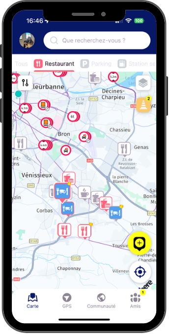
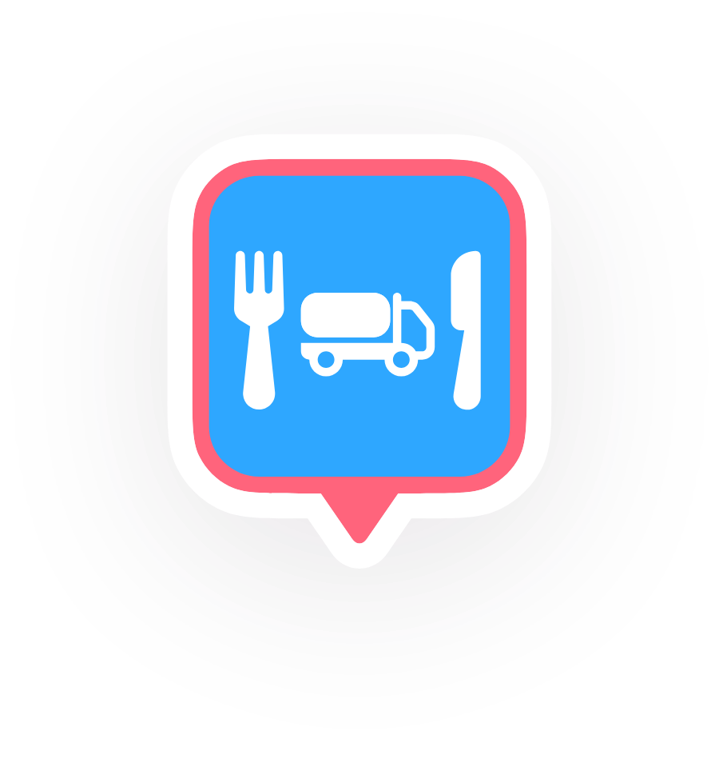
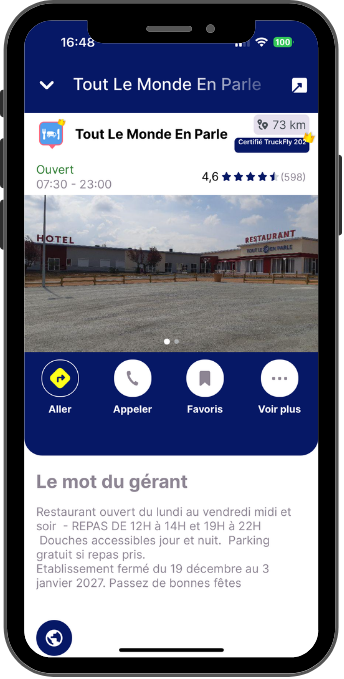
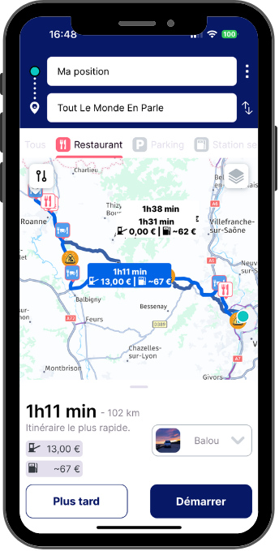
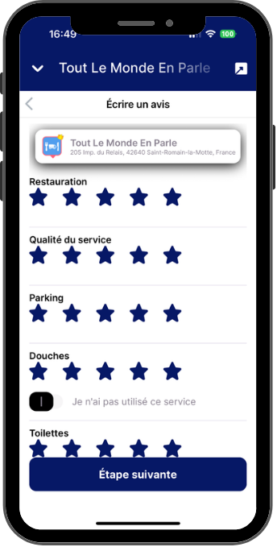
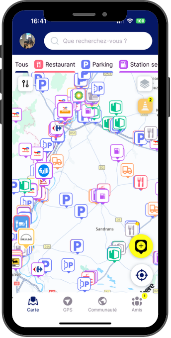

Les meilleurs restaurants routiers sur votre route




des restaurants routiers sur votre route, partout en Europe !
votre table grâce aux notes, aux avis et au mot du gérant

jusqu'au restaurant avec notre GPS spécifique poids lourd

votre avis sur le repas, le parking et les douches pour aider les autres !

aussi les parkings, stations-service et lavages poids lourd sur votre route !
